Embedded AI
Running machine learning on the device itself: why it pays off, a minimal primer on neurons, layers and training, the TinyML workflow from collecting data to quantizing and deploying a model, and what to do when the world changes after deployment.
Intro and motivation
Why embedded AI in this course?
One more thing the device can do with its data
So far the course has built the body of an embedded system: sensors that measure, processors that compute, and wires that carry the data around. Embedded AI gives it a small brain.
Instead of only collecting numbers and passing them on, the device itself works out what they mean: "someone said the wake word", "this machine sounds wrong", "there is a person in the room".
- Earlier weeks covered the hardware used in IoT embedded systems, the sensors that collect data from the environment, and how to move that data between chips (Week 5) and between boards (Week 7); wireless links between devices come later in the course.
- The question of this lecture: is there something more we can do, directly on the device?
- For certain applications, yes. The slide's examples of analysing the data directly on the device:
- Wake-word detection on a smart speaker.
- Presence detection: is a person in front of the camera?
- Anomaly detection on industrial machinery.
- Health parameter monitoring on a smartwatch.
- All of them turn a continuous stream of raw sensor data into a rare, compact decision.
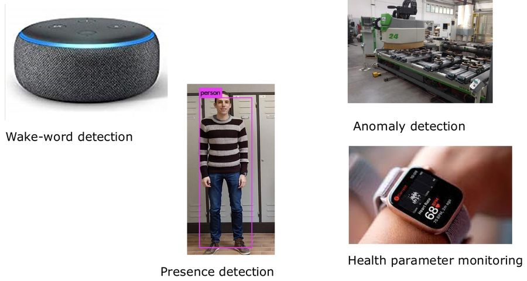
BLERP: why process on the device?
Bandwidth, Latency, Economics, Reliability, Privacy
Imagine every smoke detector in a city phoning a call centre and describing the air, every second, all day. The phone lines would be jammed, the call centre would cost a fortune, and when the line is down nobody gets warned.
A smoke detector instead decides by itself and only calls when there is smoke. Embedded AI does the same for smarter decisions. The five reasons spell BLERP.
- Bandwidth: transmitting raw data from thousands of devices would clog the infrastructure.
- Latency: local processing lowers the response time, enabling real-time applications.
- Economics: maintaining a cloud infrastructure and transmitting data to it is expensive.
- Reliability: fewer external dependencies make the system more fault-tolerant.
- Privacy: when data stays on the device there are fewer opportunities for breaches and abuse.
| Example | On-device | BLERP letters |
|---|---|---|
| Early wildfire detection | Bosch BME688 gas sensors on trees; an ML model recognises fire-related gases; an alert goes to a gateway over an ultra-low-power, always-on LoRaWAN mesh | B, E, R (our reading) |
| Keyword spotting at home | Microphone arrays always listening; the audio stream is analysed locally | P, B, E, L (named on the slide) |
For keyword spotting the slide spells it out: streaming every home's audio to the cloud would make "the internet explode" (bandwidth and economics), local analysis keeps the recordings private, and the user needs early feedback (latency).
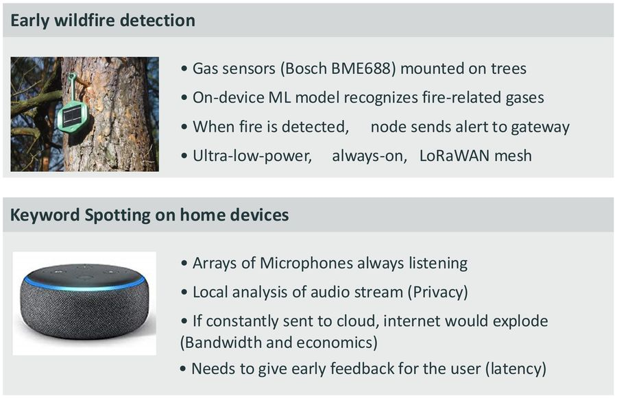
AI vs ML vs DL
Three nested circles
"Vehicle", "car" and "electric car" describe ever narrower groups. AI, machine learning and deep learning work the same way: every deep learning system is a machine learning system, and every machine learning system is a form of AI, but not the other way round.
- Artificial Intelligence: attempting to perform complex tasks by mimicking human intelligence.
- Machine Learning: the subfield of AI focusing on learning from data rather than explicit rules.
- Deep Learning: the subset of ML techniques based on deep neural networks. Contemporary AI is mostly deep learning, and so is most of this lecture.
- "Deep" refers to the many stacked layers of neurons (topic 10).
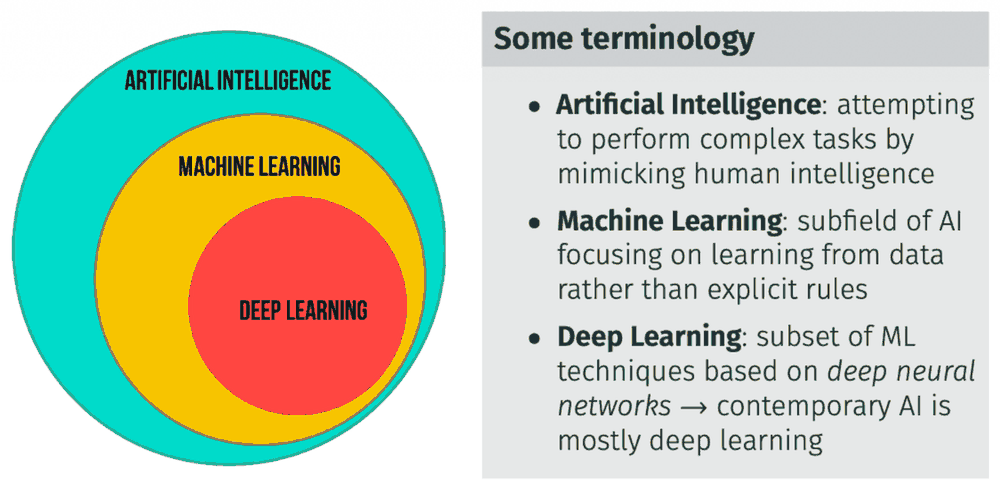
Conditional logic vs machine learning
Write the rules, or learn them from examples
If you can explain a task in a few sentences ("brake if you will hit the wall before you can stop"), just program it. But try writing rules for recognising a handwritten "2": which pixels, at which angles, in whose handwriting?
For tasks like that, it is easier to show the computer thousands of labelled examples and let it learn the rule itself.
| Conditional logic | Machine learning |
|---|---|
| Deterministic | Requires training data |
| Efficient | Does not require a human to generate the model, so it scales better |
| Does not require training data | The lecture focuses mainly on deep learning |
| Requires a human able to describe how to do the task | |
| Does not scale with feature dimension and the complexity of the task |
- The slide's example program brakes a car when
distance_from_wall / current_speed < seconds_to_stop + safety_buffer: four inputs and physics anyone can write down. - Handwritten digits have hundreds of inputs (one per pixel) and no rule anyone can write. A model is learned from pairs such as (image, "2").
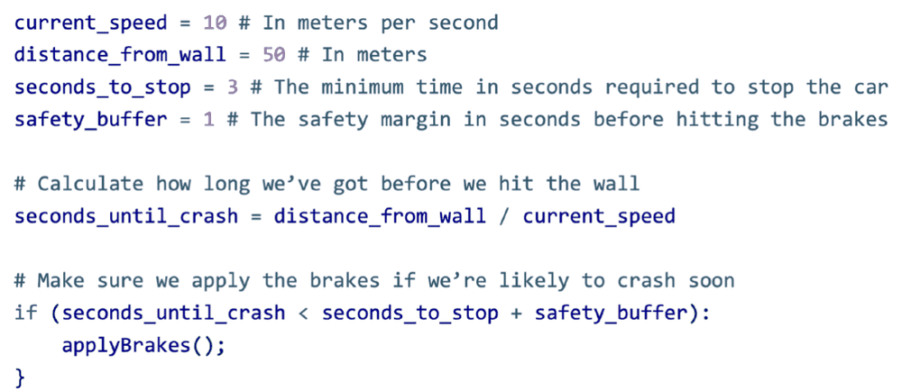
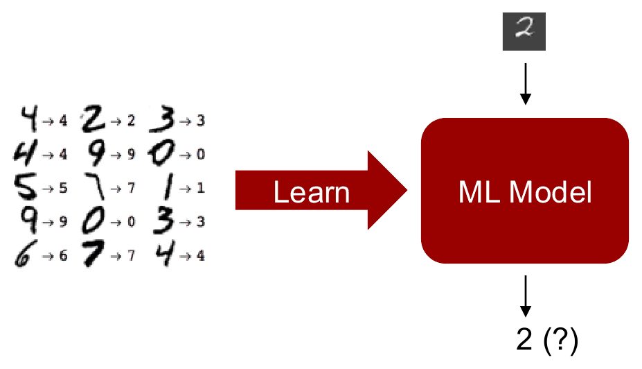
Edge AI, TinyML, embedded AI/ML
Many names for ML close to the data
"Edge AI" is anything that runs the model on the device instead of in a data centre, from a laptop to a phone. TinyML is the hard end of that: getting models to run on tiny, cheap, battery-powered chips with a few hundred kilobytes of memory. That is this course's focus.
- Edge AI: running ML models directly on edge devices (PCs, smartphones, consumer electronics, IoT) rather than in the cloud.
- TinyML: the subfield of ML/DL dealing with the challenge of running models on low-power, resource-constrained devices. It is the overlap of machine learning and embedded systems.
- Less common aliases: AIoT, edge computing, embedded ML, resource-constrained ML, resource-efficient ML.
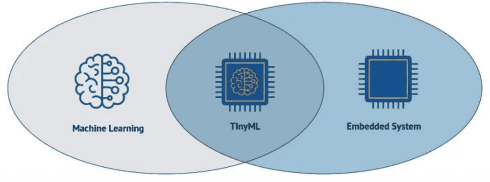
Machine learning and neural networks primer
Learning a model of the data generating process
Explain the past, predict the future
Somewhere there is a real-world process that produces the data: people writing digits, a machine vibrating. You never see the process itself, only examples of what it produced.
Learning means building a model from those examples that behaves like the process, so it also gets new examples right. A student who memorises last year's exam answers has not learned; one who understands the subject has.
- An unknown data generating process P produces a dataset of N examples (x1, y1) … (xN, yN): inputs x and their labels y.
- An ML model is learned from the dataset. Given a new input xN+1 from the same process, it outputs an estimate ȳN+1.
- The goal of learning is to build the simplest approximating model able to explain past data and future instances provided by the data generating process.
- Too simple a model cannot capture the process (underfitting); too complex a model also fits the noise in the examples and generalises badly (overfitting). The lab shows both.
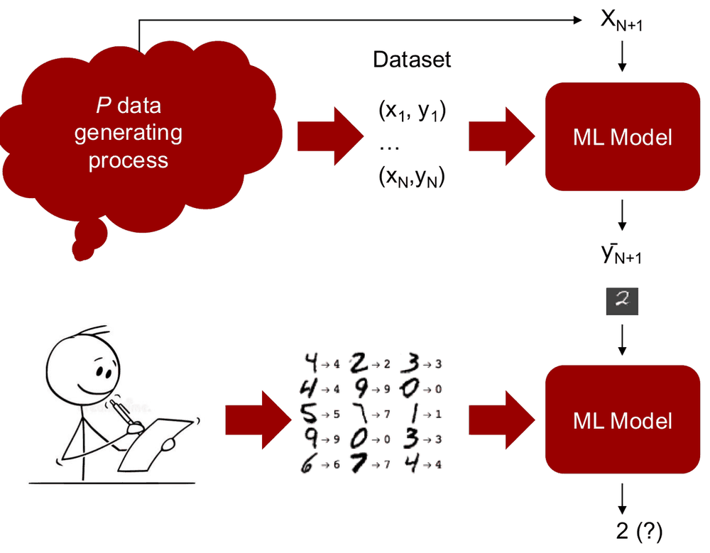
Types of tasks: classification and regression
Pick a label, or estimate a number
Classification answers "which one?": is this sound a keyword or not, is the forklift idle or moving. Regression answers "how much?": how full is the cup, how many people are in the room.
- Tasks addressed with machine and deep learning include classification, regression, object detection, segmentation, anomaly detection, prediction and feature reduction, among others.
- Classification examples: whether a keyword is present in an audio segment; whether machinery is moving or standing idle, from accelerometer data. The output is a label, often with a confidence per class (e.g. idle 96%, moving 4%).
- Regression examples: measuring the level of a liquid in a cup; counting the people in a room from radar data. The output is a quantity.
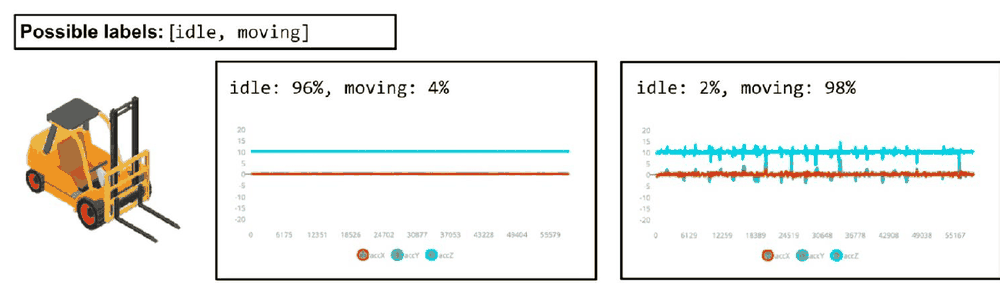
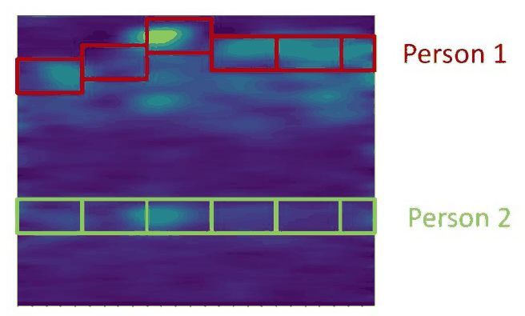
The artificial neuron
A weighted vote, then a squash
A neuron is a tiny committee. Every input casts a vote, but some voters matter more than others: that is the weight. The neuron adds up the weighted votes plus a fixed nudge (the bias) and then decides how strongly to "fire" using an activation function.
- Compute a linear combination (weighted sum) of the inputs, then apply an activation: some non-linear operation, e.g. an s-shaped function.
y = φ( w1x1 + w2x2 + … + wmxm + b )
- The weights represent how important each input is.
- Common activations: the s-shaped sigmoid σ(z) = 1 / (1 + e-z), the step function, and ReLU(z) = max(0, z).
- "Pretty useless by itself, but if we stack many in series…": a single neuron separates its inputs with one straight boundary (where the weighted sum is 0). XOR needs two lines, so it needs more neurons.
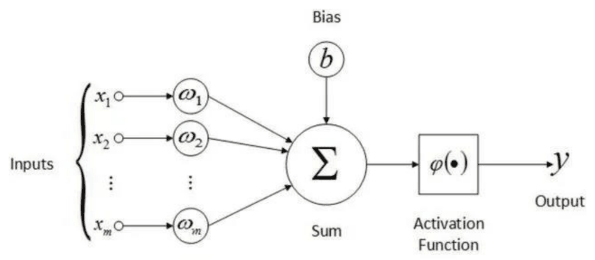
Many neurons form a dense layer
Every input connected to every neuron
Put several neurons side by side, all listening to the same inputs, and you get a layer. Each neuron has its own set of weights, so each one looks for something different in the same data. Because every input is wired to every neuron, the number of weights grows quickly, and on a microcontroller every weight costs memory.
- A dense (fully connected) layer is a set of units characterised by weights W and a bias b. Its outputs are also called activations. The input is usually 1D (a vector).
- Output: x̄ × W + b, followed by the activation function. Wij connects input i to output neuron j.
- Size of a layer from nin inputs to nout neurons:
parameters = nin · nout + nout MACs = nin · nout
- The slide's layer: 7 inputs, 5 outputs: 35 weights + 5 biases = 40 parameters, 35 multiply-accumulates per inference.
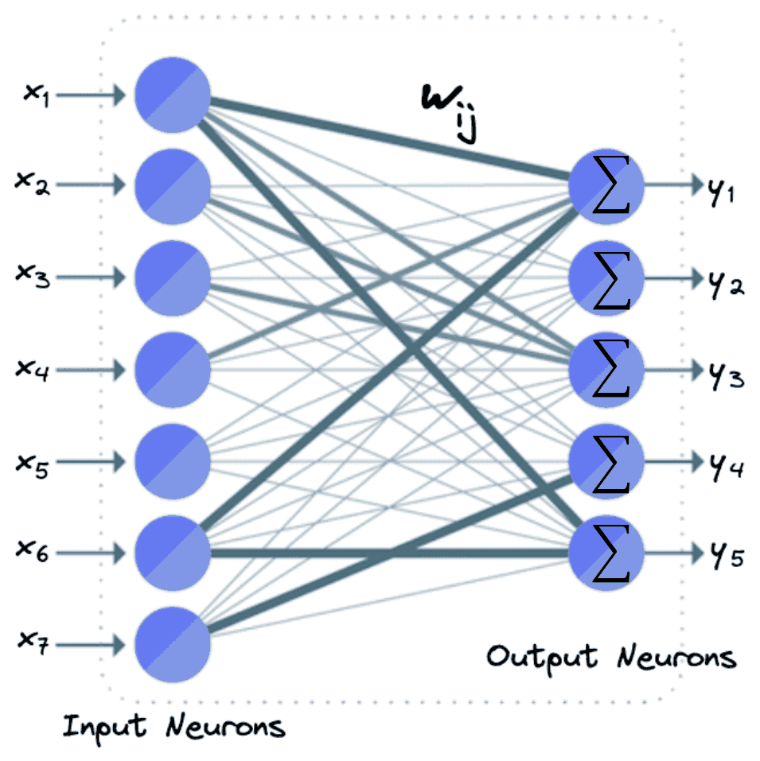
Many layers form a deep neural network
The multilayer perceptron
Stack layers one after the other and each layer builds on what the previous one found: edges, then shapes, then "cat ears". With enough layers and neurons, a network can model almost any relationship between input and output, even "is this bunch of pixels a cat?".
- An input layer, multiple hidden layers and an output layer of dense layers form a multilayer perceptron (MLP), a deep neural network.
- Interesting property: it can approximate any (continuous) function, even a very complex one, given enough neurons (the universal approximation property).
- The slide's MLP: 5 inputs, three hidden layers of 5, and 3 outputs. Weights: 3 × (5·5) + 5·3 = 90; biases: 5 + 5 + 5 + 3 = 18; 108 parameters in total.
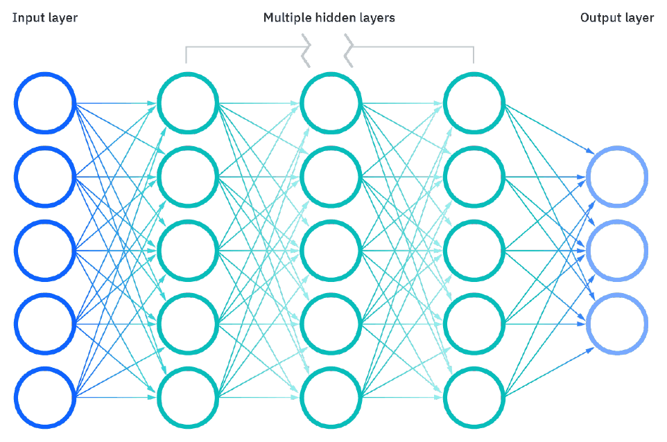
How does the learning happen?
Loss, backpropagation and gradient descent
Picture standing on a foggy hillside, trying to reach the bottom of the valley. You cannot see the bottom, but you can feel which way the ground slopes under your feet, so you take a step downhill, and repeat.
Training does exactly that. The height is the loss (how wrong the network is), your position is the set of weights, and each step nudges the weights downhill.
- The weights are randomly initialised.
- Compute the output on the training data.
- Compute an appropriate loss function: how far is the computed output from the label (the actual output)?
- Use the loss to estimate how the weights should be updated to obtain a better prediction (backpropagation + gradient descent). Backpropagation computes the slope of the loss for every weight; gradient descent then steps against it:
w ← w - η · ∂L/∂w η is the learning rate
- Repeat. The goal is to find the minimum of the loss function, or to get close to it.
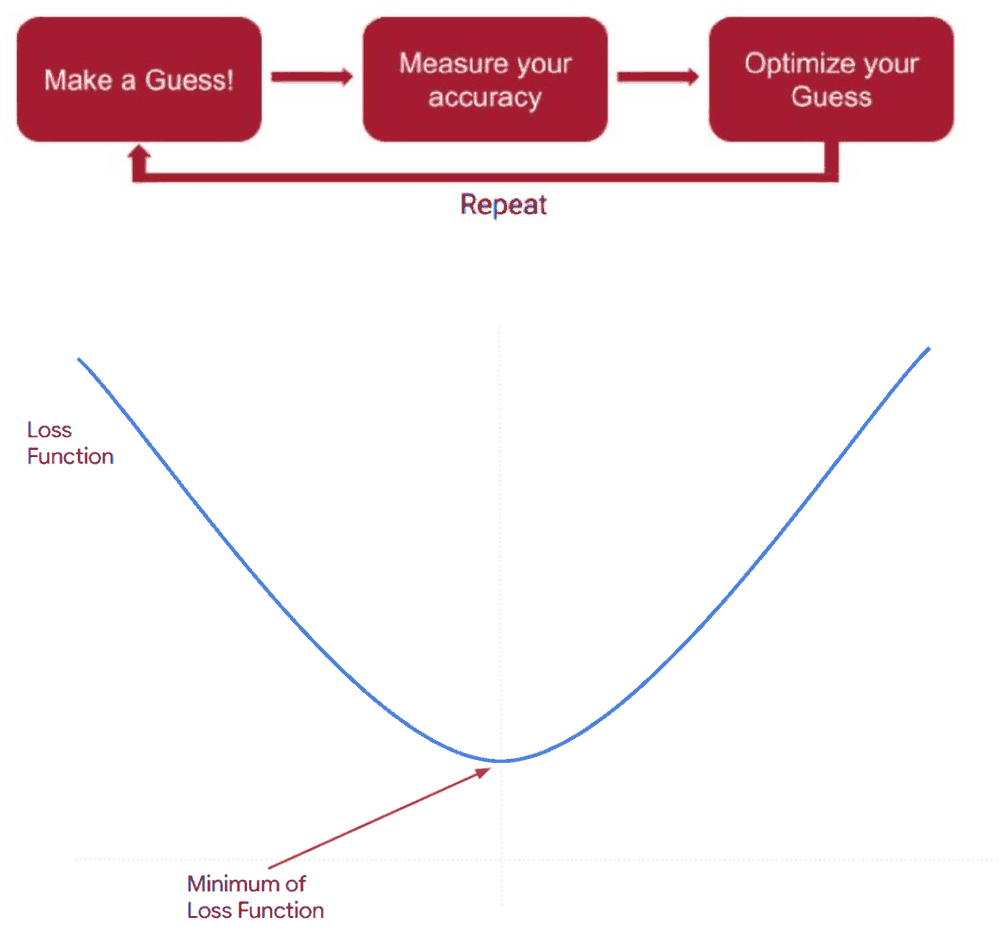
Is it really that simple?
Yes and no, and beyond multilayer perceptrons
The recipe works: big networks, lots of data, lots of computing power. The catch is that someone has to label all that data by hand, and big networks are expensive to train and to run, which matters a lot on a battery. And a photo is not just a long list of pixels: which pixel sits next to which carries meaning, so images, sound and text get network designs of their own.
| Yes | No |
|---|---|
| DL is proving effective at many tasks | Data labelling is mostly manual, so it is expensive and time-consuming |
| How? Larger models plus lots of data and compute | Training and running big models is (computationally) expensive |
- Beyond multilayer perceptrons: do we just treat a picture as a vector of pixels? Different types of data (text, images, audio, sensors) require different model architectures: convolutional neural networks, recurrent neural networks, transformers, etc.
- A convolutional network, for example, slides the same small set of weights over neighbouring pixels, which both uses the image's structure and needs far fewer weights than a dense layer on every pixel.
TinyML and embedded AI
The computing continuum
Cloud, fog and edge
Think of a company: head office (cloud) with all the experts and resources but far away, regional offices (fog) that collect and sort the local paperwork, and staff on the shop floor (edge) who must react on the spot with what they have. Real work usually involves all three.
- Cloud: centralised, large-scale compute and storage: high throughput, high latency.
- Fog: intermediate gateways or local servers: pre-processing, caching, aggregation, filtering.
- Edge: end nodes (IoT, industrial or user devices): real-time operation, limited resources.
- Real-world solutions often operate at multiple levels. Example, smart speaker: edge processing for wake-word detection and noise suppression; cloud processing for speech recognition and the voice assistant.
What makes embedded ML different?
Constrained, always on, hard to update, and a whole pipeline
Cooking in a restaurant kitchen versus on a camping stove. In the cloud you have every tool and can change the menu every day. On the edge you have one burner, a small pot and a fixed recipe, it has to work every time, and once the device is in the field you can hardly change the recipe.
| In the cloud | On the edge |
|---|---|
| Virtually unlimited compute, memory and storage | Constrained resources (cost, battery operation) |
| Less latency-sensitive; data processed in batches | Always-on, streaming, real-time processing |
| Models retrained often and deployed instantly | After deployment, updating models is difficult or impossible |
| Relatively general-purpose hardware; can run any model | Application-dependent hardware with limited flexibility and support |
| Models must be tailored to the hardware (or vice versa) |
- Embedded ML is not just ML: it includes the whole pipeline. Sensors → preprocessing and feature extraction → the machine and deep learning algorithm → post-processing and decision making → actuators, all running in software on the device's hardware.
- Applications shown: wake-word detection, person detection, gesture recognition.
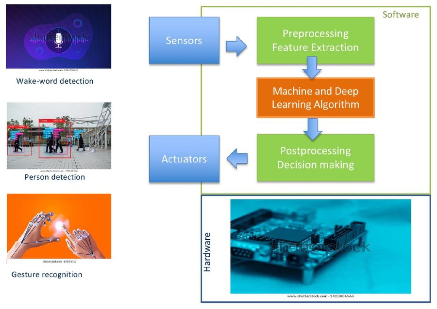
Define requirements
Application → device → algorithm
Before choosing a model, decide what the product must do: how fast it must answer, how much it may cost, how long the battery must last, how accurate it must be. Those answers pick the chip, and the chip decides how big and how heavy the model is allowed to be. Starting from the model is like buying furniture before measuring the room.
- Application requirements:
- How fast should the algorithm execute once? (latency budget, algorithm + device)
- How much should the system cost? (cost budget, device)
- How long should the system work without recharging? (energy budget, algorithm + device)
- How accurate should the system be? (accuracy, algorithm)
- These define the device requirements: how much on-board memory, how fast a processor, which hardware components, how large a battery.
- Which in turn define the algorithm requirements: how many operations the algorithm can do and still fit in the latency budget, and how many parameters it can have and still fit in memory.
- Handy relations:
t = MACs / (MACs per second) E = P · t battery life = capacity / average power
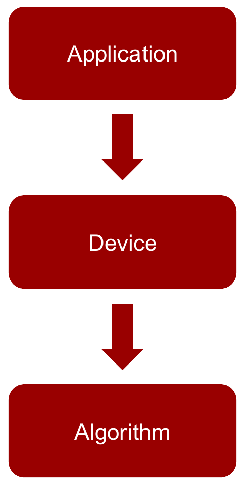
Hardware in embedded AI
From MCUs to NPUs, often combined
Different jobs, different tools: a Swiss army knife (CPU) does everything reasonably, a crowd of helpers (GPU) does one simple thing in huge numbers, and a dedicated machine (NPU, ASIC) does exactly one job very efficiently. Real products often carry several.
| Platform | Characteristics | Examples |
|---|---|---|
| Microprocessor (CPU/MPU) | High frequency, multi-core, sophisticated instructions and cache hierarchy | x86, ARM Cortex-A |
| Microcontroller (MCU) | Low frequency, low power, built-in memory and peripherals | ARM Cortex-M, RISC-V, ESP32 |
| GPU | Single instruction, multiple threads; high parallelism, bandwidth and throughput | NVIDIA Jetson, Adreno |
| NPU | Heterogeneous designs, low-precision math, multi-level local memory, static graph execution | Qualcomm HTA, ARM Ethos-U/N, Google EdgeTPU, Myriad X, NVIDIA DLA |
| DSP | Optimised instructions (SIMD, fixed-point math, hardware loops); audio, radar, image, telecom | |
| SoC | Processing, memory, storage and connectivity on one die; from phones to IoT | |
| FPGA | Reconfigurable digital logic; prototyping or low-volume domain-specific tasks | |
| ASIC | High-efficiency, single-purpose chip (e.g. video encoding); like an FPGA but for large volumes |
Real-world solutions often combine multiple platforms, for example an MCU with a small NPU next to it.
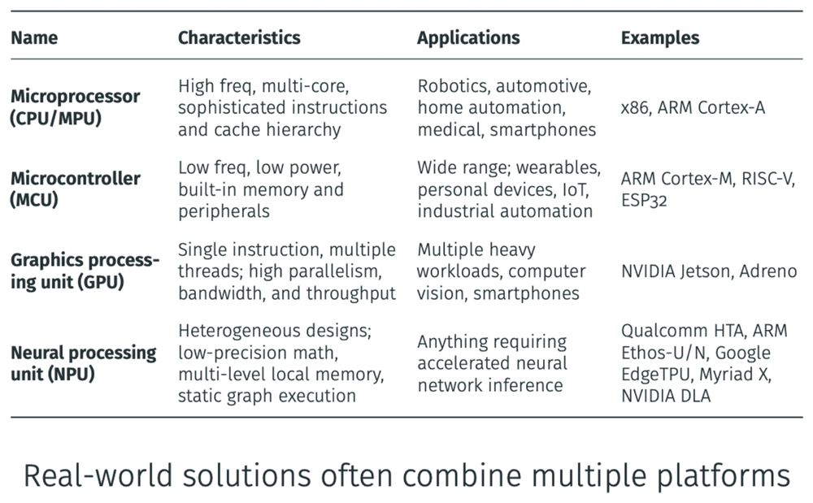
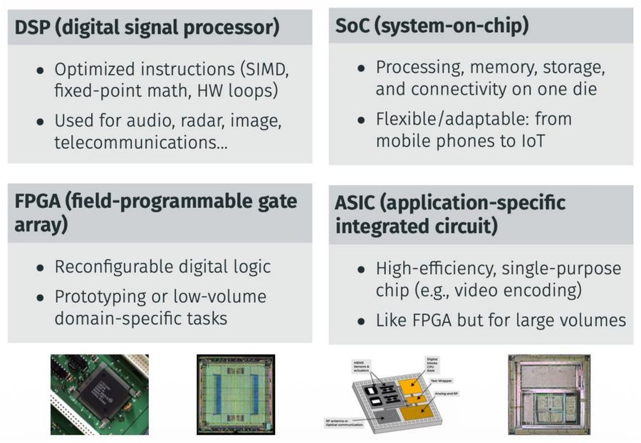
CPU, GPU, NPU: why custom accelerators?
Neural networks are a very regular kind of work
A neural network is like an assembly line that always does the same steps in the same order, mostly "multiply and add". A general-purpose CPU spends much of its effort being ready for surprises that never come. An NPU drops that and fills the chip with multiply-add units instead.
- Different hardware for different workloads. CPU: few cores with many specialised instructions, general-purpose. GPU: many simpler cores running the same instruction, parallel processing. NPU: fixed-function hardware (MAC arrays, activations), neural networks.
- What is special about neural networks:
- Pre-determined, static computational graphs (no conditional branching, fixed-length loops), so no need for control flow.
- Inputs and weights are used multiple times, so keep data close to the computation and avoid unnecessary memory transfers.
- They mostly boil down to multiply-accumulate (MAC) operations: acc ← acc + w · x.
- They can often run with very low-precision arithmetic (INT8 or less).
- Design priorities for NPUs: energy efficiency over flexibility, minimal data movement, high compute utilisation, and maximum throughput per watt.
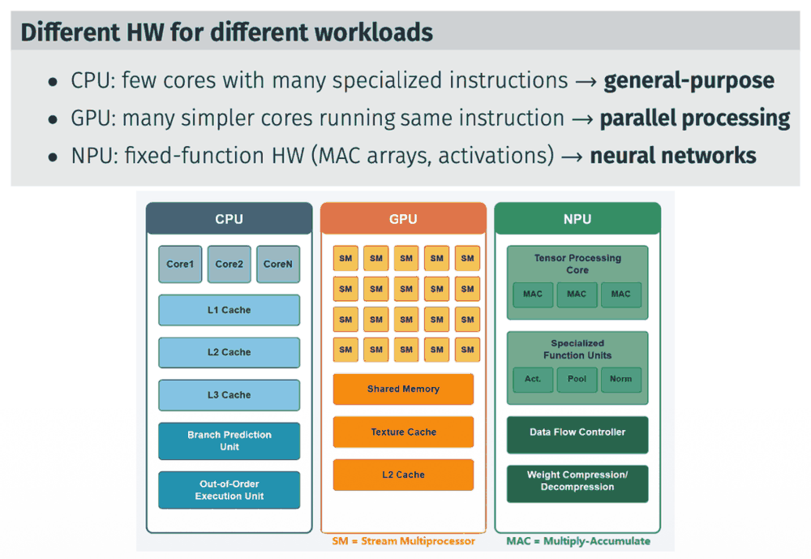
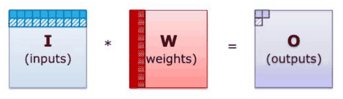
Case study: the Arm Ethos-U microNPU
How an NPU sits next to an MCU
The microcontroller is the manager and the NPU is a specialist workshop next door. The manager hands over a job ("run this network on this input"), a conveyor belt (DMA) brings the materials, the workshop's foreman reads the work order and runs the machines, and the result comes back.
- Target: IoT, wearables, consumer devices. The microNPU sits next to a Cortex-M host and shares the system flash and SRAM.
- Control logic: the host MCU requests an inference job; the DMA handles the different streams (commands, input, output, weights); the control unit parses the command stream and orchestrates data transfer and computation.
- Compute units: the MAC engine accelerates dot products; the elementwise engine parallelises activation functions and other operations; the weights for the current layer and partial results are kept in local memory. A weight decoder unpacks compressed weights.
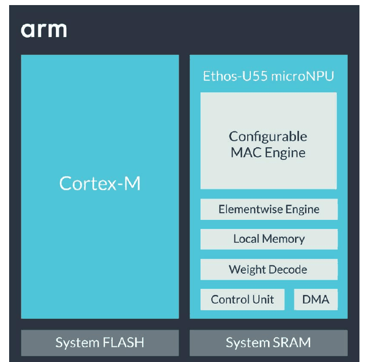
The TinyML (algorithm) workflow
Eight steps from data to inference
Building an embedded ML product is a production line: gather the ingredients (data), prepare them, design and train the model, check it and slim it down, translate it for the target chip, install it, and finally use it. The rest of this part walks through the steps one by one.
| Step | Stage | AI infrastructure area |
|---|---|---|
| 1 | Collect data | Data engineering |
| 2 | Pre-process data | |
| 3 | Design model | Model engineering |
| 4 | Train a model | |
| 5 | Evaluate, optimise | Model deployment |
| 6 | Convert model | |
| 7 | Deploy model | |
| 8 | Make inference | Product analytics |
The grouping follows the colours on the slide. This is the algorithm part of the application → device → algorithm chain.
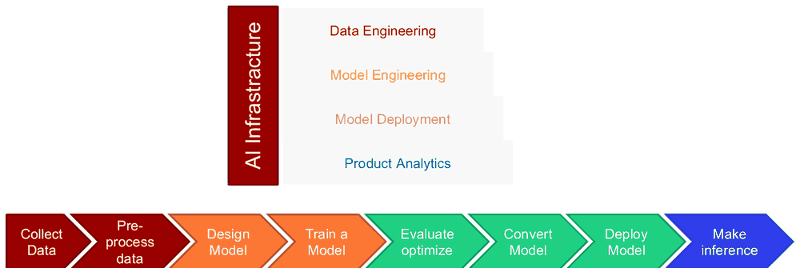
Data collection: am I collecting the right data?
The model is only as good as its examples
If you teach a child what a cat is using only photos of ginger cats in sunshine, they may not recognise a black cat in the dark, or one curled up behind a sofa. The model is the same: it is good at exactly what its dataset shows it.
- What should the dataset contain? Example: image classification, detect cats.
- Which situations will the system encounter after deployment?
- Different illuminations and viewpoints.
- Occluded and deformed targets.
- Examples of different objects of the same class.
- What is (well) represented in the dataset is what the algorithm will perform well on.
- Data labelling is equally important (if not more) and bothersome.
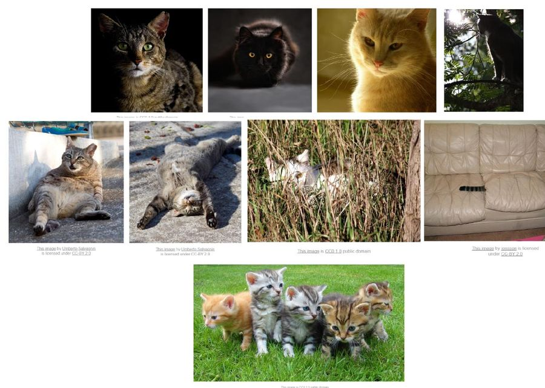
Data preprocessing
Raw data, hand-picked features, or learned features
To tell a running engine from a silent one, you do not need every vibration sample: "how much does it shake?" is enough. Preprocessing turns piles of raw samples into a few numbers that make the answer obvious, so the model can be smaller and more accurate.
- Objective: make it easier for the ML algorithm to learn the patterns, and be more accurate during inference.
- Three options from the slide:
- Sometimes the network takes in the raw data.
- Sometimes we perform statistical or hand-selected feature extraction (mean, variance, peak-to-peak distance…).
- Sometimes we even use parts of other pre-trained neural networks for this purpose.
- For a window of N samples si:
mean = (1/N) Σ si variance = (1/N) Σ (si - mean)² peak-to-peak = max - min
- Preprocessing runs on the device too, so it costs time and energy at every inference.
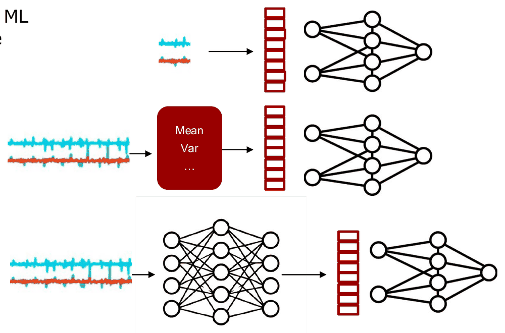
Model design and training
The questions to answer for a multilayer perceptron
Designing a network is choosing the size and shape of the building; training is the construction work. Both come with decisions nobody can make for you: how many floors (layers), how many rooms per floor (neurons), how to judge the result, and when to stop working.
| Design | Train |
|---|---|
| How many layers should I stack? | Other hyperparameters for the training? |
| How many neurons for each layer? | Where should the training run? My PC, a local server, a data centre? |
| Which activation functions should I use? | When should the training stop? |
| Which evaluation metric(s) are correct? | |
| Which loss function is the best? |
- Settings chosen before training (layers, neurons, learning rate, number of training passes) are called hyperparameters; the weights and biases are the parameters that training learns.
- In TinyML the design questions are bounded by the algorithm requirements of topic 15: every layer and neuron adds parameters (memory) and MACs (latency, energy). The lab in topic 9 counts them.
- Training normally runs off the device, on a PC or server; only inference runs on the MCU, until on-device learning (Part 4).
Evaluation: MAE and accuracy on test data
Measure on data the model has never seen
To grade a student you ask questions they have not seen before; repeating the homework only tests their memory. A model is graded the same way, on test data kept aside during training. For "how much" tasks you measure how far off the answers are on average; for "which one" tasks you count how often they are right.
- With X the input, T the target label and Y = f(X) the output of the ML algorithm, over the test inputs:
- Regression, mean absolute error:
MAE = (1/N) Σ |Yn - Tn|
- Classification (binary or k classes), accuracy:
Accuracy = (1/N) Σ (Yn == Tn)where (Yn == Tn) counts 1 when the prediction is right and 0 otherwise.
- Use new data, not used for training, for this evaluation (test data). A model can fit its training data almost perfectly and still fail on new data: see the overfitting lab in topic 6.
- Another common regression metric is the mean squared error, MSE = (1/N) Σ (Yn - Tn)², which punishes large errors more.
Note on the slide's formulas: they write the sum from n = 0 to N while dividing by N, which adds up N + 1 terms. With N test inputs the sum should run over exactly N terms (n = 1 to N, or n = 0 to N - 1). The meaning is unchanged: the average over the test set.
Model compression techniques
Fewer bits, fewer weights, or a smaller design
Three ways to fit a trained model into a small chip, like packing for a trip with hand luggage only: write each number with fewer digits (resolution), leave out what you barely need (complexity), or bring a smaller item that does the same job (topology).
| Family | Technique | Variants |
|---|---|---|
| Resolution | Quantization | PTQ, QAT |
| Resolution | Binarization | |
| Complexity | Pruning | Unstructured, structured |
| Complexity | Low-rank approximation | |
| Topology | Knowledge distillation | Response-based, feature-based |
| Topology | Neural architecture search |
- Quantization stores weights and activations with fewer bits; binarization goes to the extreme of 1 bit.
- Pruning removes weights (unstructured) or whole neurons or channels (structured); low-rank approximation replaces a big weight matrix by a product of two thin ones.
- Knowledge distillation trains a small "student" network to mimic a large "teacher"; neural architecture search looks for an efficient network design automatically.
- Compression belongs to the "evaluate, optimise" step of the workflow; the next topics focus on quantization.
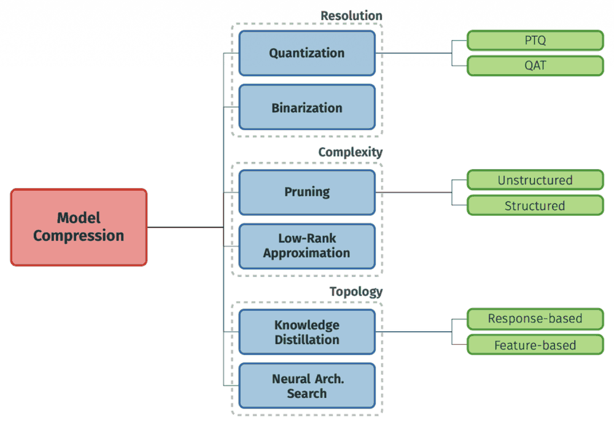
Quantization and de-quantization
From 32-bit floats to 8-bit integers and back
Instead of writing a weight as 13.45678, write it as one of 256 marks on a ruler: "mark 48". You only need to remember where the ruler starts and how far apart the marks are. Every weight then fits in one byte instead of four, at the price of a small rounding error.
- Quantization maps model weights and activations into lower-precision approximations (e.g. int8 or int4).
- Uniform quantization (the most common method) is a linear mapping between integer values and floating-point values.
- During quantization we estimate a zero point and a scale:
q = round( x / scale ) + zero_point
- During de-quantization (reconstruction) the formula is reversed:
x = ( q - zero_point ) × scale
- A common way to pick them for a range [min, max] and b bits (asymmetric quantization): scale = (max - min) / (2b - 1) and zero_point = round(-min / scale), so that 0.0 is exactly representable. Values outside the range are clipped to 0 or 2b - 1.
- The slide's example: [-5.4, +4.5] to 8 bits gives scale = 9.9 / 255 ≈ 0.0388 and zero_point = 139, so -5.4 → 0, 0.0 → 139, +4.5 → 255. Nearby floats that round to the same code (the red box in the slide) all come back as the same value: that is the quantization error, at most scale / 2.
- The network figure simply rounds each weight to the nearest integer (scale 1, zero point 0) to illustrate the idea.
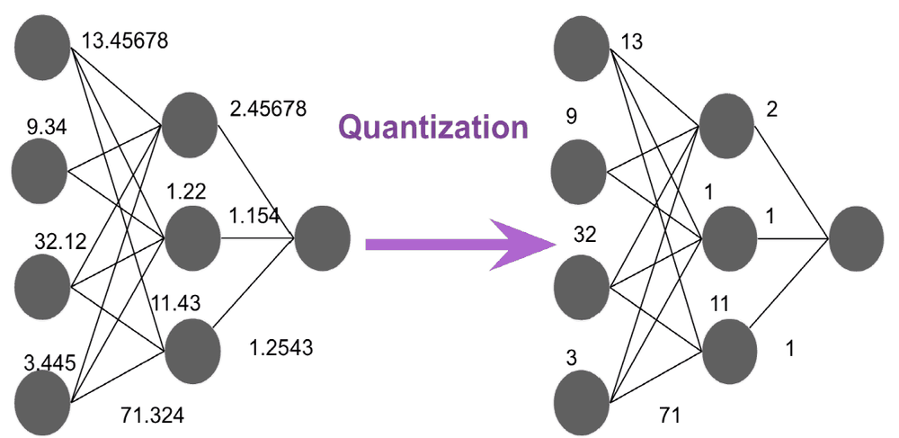
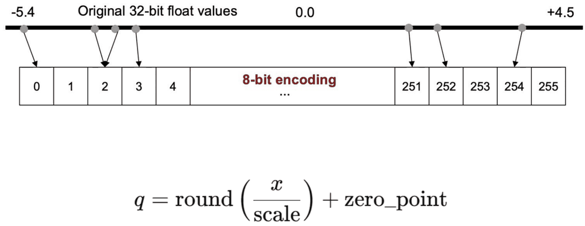
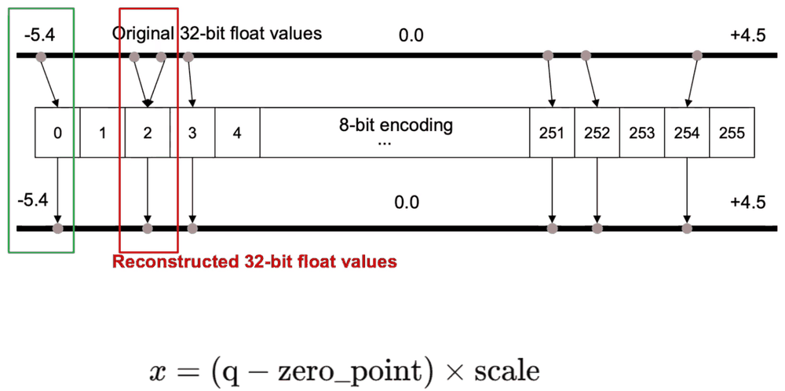
Why quantizing is (almost) always a good idea
Smaller, faster, cheaper, more portable, slightly less accurate
Switching from long decimals to whole numbers makes the model about four times smaller, the arithmetic quicker and the battery happier, and it runs on chips that cannot do decimals at all. In exchange you usually lose a little accuracy, a price most embedded products gladly pay.
- Storage and memory size: an immediate ≈4x reduction in storage (float32 → int8), and a 2 to 4x reduction in peak RAM usage depending on the type of quantization.
- Inference latency: integer arithmetic instead of floating point makes the computations on the device much faster; expect roughly 2 to 4x.
- Energy saving: for the same reasons, 8-bit operations need much less energy than 32-bit floating-point arithmetic.
- Portability: not every device can perform 32-bit floating-point arithmetic; every device can perform 8-bit integer arithmetic.
- Accuracy-latency (/memory) trade-off: quantization works well, but the model can suffer an accuracy loss during inference. This loss is usually small compared with the gains: in the slide's plot the 8-bit models reach almost the same top-1 accuracy as the float models at about half the latency.
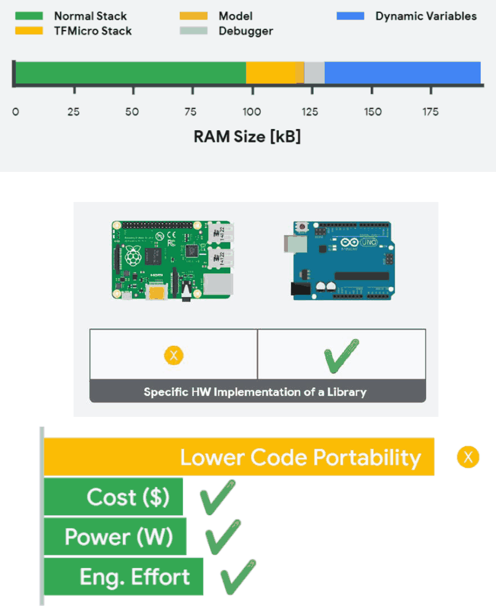
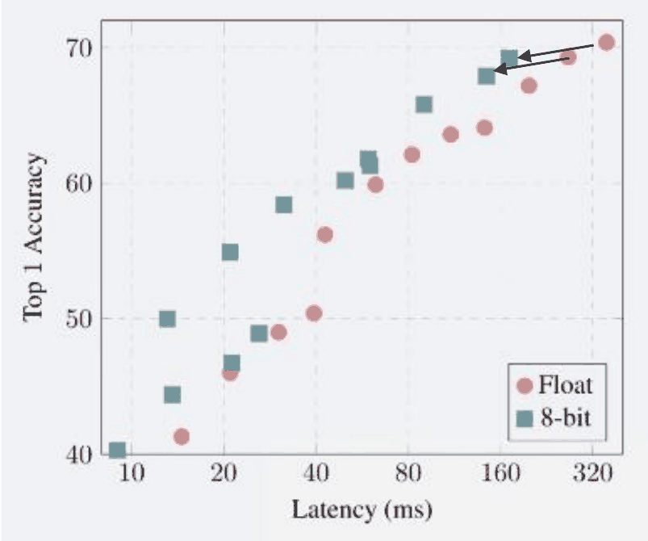
When to quantize: PTQ or QAT
After training, or during it
Post-training quantization is like shrinking a finished photo: quick and easy, and usually good enough. Quantization-aware training is like composing the photo knowing it will be printed small: more work, but it holds up much better when you shrink a lot.
- Post-training quantization (PTQ): simple to implement, does not require labelled data or training steps, few hyperparameters. A pre-trained model is calibrated on a small set of calibration data (to estimate ranges, scales and zero points) and then quantized.
- Quantization-aware training (QAT): simulates the effect of quantization during training and adjusts the weights and quantization parameters. More effective at low bit-widths. The quantized model is retrained on training data.
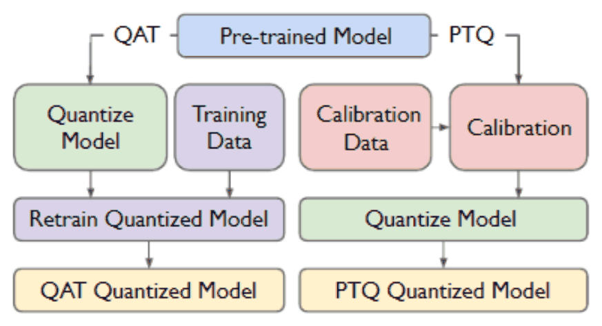
Model conversion and deployment
From a compressed model to an executable binary
A trained model is like a recipe written in one language; every chip family speaks a different one. Conversion translates it into a common format, and deployment either brings a small "interpreter" along on the chip, or translates the recipe directly into the chip's own instructions.
- Conversion, the problem: different hardware targets (MCUs, SoCs, FPGAs) require different representations and compilation flows. The "solution": a few model exchange formats (ONNX, TFLite, NNEF) and many application-specific tools with different focuses.
- Inference engines: convert the model into an internal representation (offline) and execute it with a runtime integrated into the firmware. The most popular approach, with many runtimes available: TFLite/TFLM, ExecuTorch, ONNX Runtime, Tract.
- Compilers and code generators: generate optimised, target-specific machine code or native code (e.g. C/C++, Rust) for direct execution: TVM, XLA, IREE/MLIR, uTensor, onnx2c.
- Most tools are a mix of both approaches. Vendors ship their own toolchains for their chips (the slide's table lists, among others, STM32Cube.AI, eIQ, Vela, ESP-NN, TensorRT, OpenVINO, Edge Impulse).
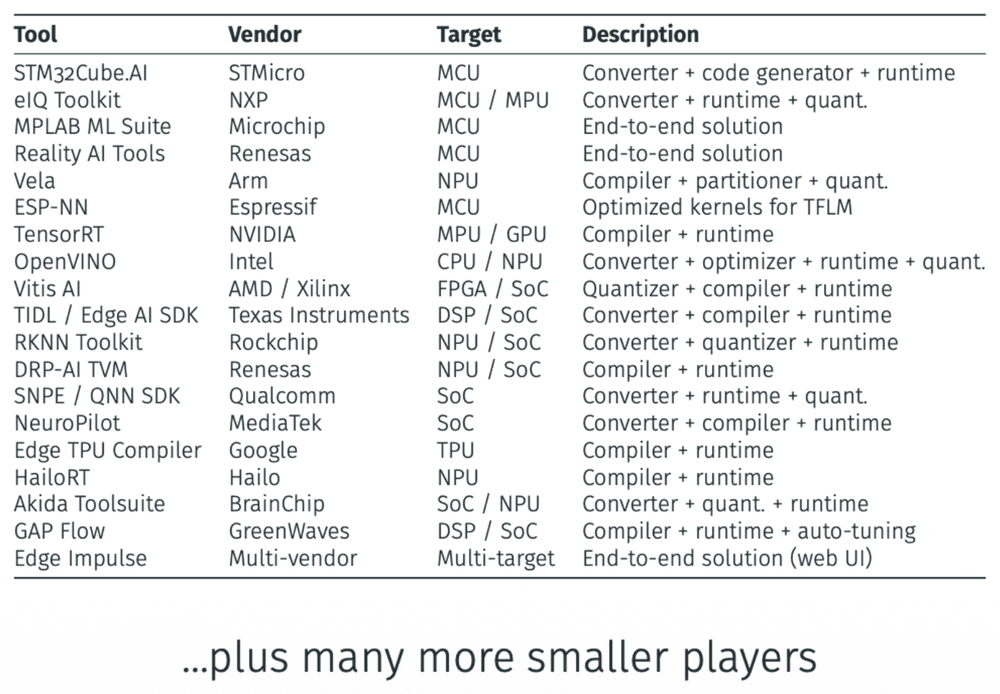
Evaluation, part 2: what embedded ML also cares about
Accuracy is not the only number
A model that is right 99% of the time but needs a minute and drains the battery in a day is useless in a wearable. After compression, check that the model is still accurate, and then measure the things the device cares about: size, speed, memory and energy.
- After compression: check for performance degradation using task-specific metrics (e.g. accuracy, mean squared error).
- In production: make sure the model performs as expected in real-world conditions (and potentially acquire new data).
| Metric | Unit | Meaning |
|---|---|---|
| Model size | kB, MB | Determined by parameter count and precision |
| Operations | FLOPs, MACs | Related to model size and architecture |
| Inference time | µs, ms | Duration of inference on a single sample |
| Throughput | FPS | Amount of data processed per unit of time |
| Memory footprint | kB, MB | Working memory for inference, including parameters and intermediate activations |
| Energy consumption | µJ | Energy required to perform one inference |
What if something changes after deployment?
The standard TinyML framework and its limits
When deployment data comes from a different process
You learn to drive in a small town in summer, then move to a big city in winter. Your skills are still correct for the town, but the world you now drive in is different. A deployed model faces the same problem: the data it sees in the field no longer looks like the data it was trained on.
- The standard framework trains once on a dataset from the data generating process P and then only runs inference.
- Problem: very often the statistical distribution of the data collected originally differs from the one collected during inference, which comes from a different process P¹. This is often called distribution shift.
- Examples from the slide:
- Training data comes from a few machines or users, but the algorithm has to work on many.
- The problem requires learning the characteristics of a specific machine or user that is unknown before deployment.
- Data distributions change over time; the algorithm should still work and adapt to these changes.
- Since updating models after deployment is hard (topic 14), the answer explored next is to let the device learn by itself.
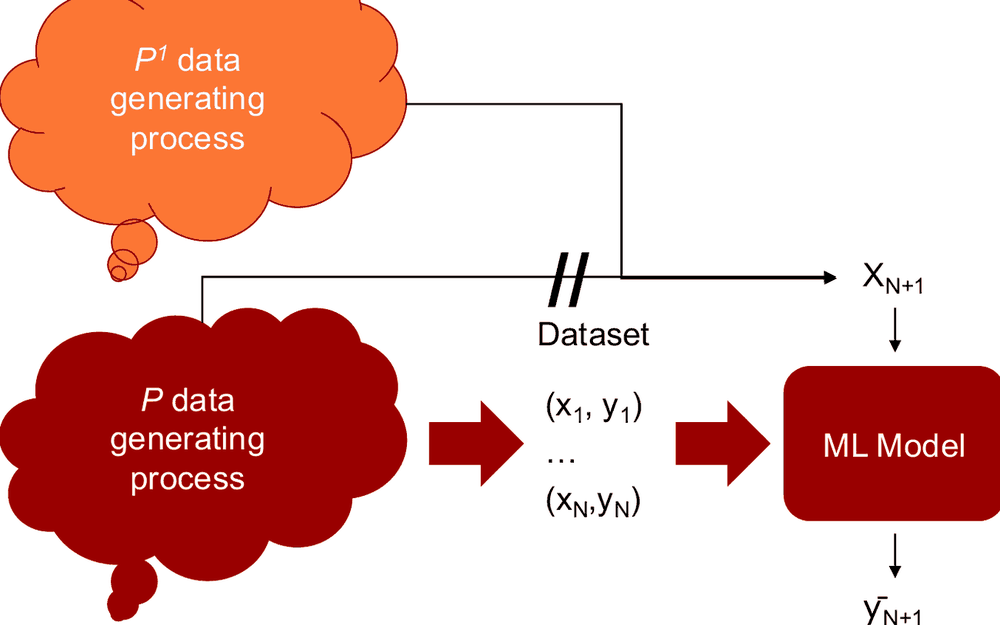
On-device learning: definition and motivations
Let the device keep learning where it lives
Instead of sending the device back to school whenever its world changes, let it learn on the job, from the data it collects itself. It then learns from exactly the situations it will face, including some nobody could have collected in advance, such as one specific user's voice.
- On-device learning (ODL): a "branch of (Tiny)ML enabling (at least part of) the learning phase of ML algorithms on devices constrained in terms of energy, memory and computation". It is the overlap of TinyML and model learning.
- Great advantage: learning on data "closer" to real-world usage, so ML algorithms are less likely to fail in real-world conditions.
- This can result in:
- Improved accuracy, by learning also on data collected on the device.
- Improved computational efficiency, by learning only on data collected on the device.
- Enabling otherwise impossible tasks, by learning on data available only on the device.
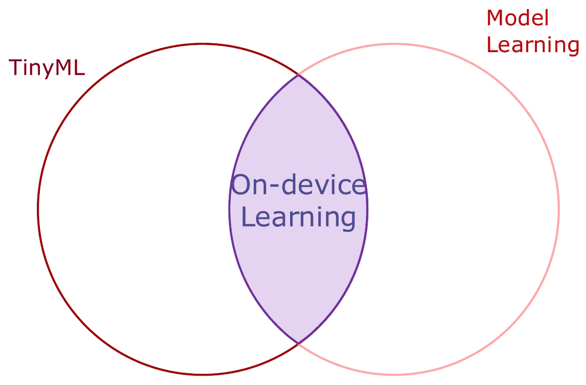
Single-change and continuous adaptation
Learn once at start-up, or keep learning
A new phone learns your face once during setup and then just recognises you: single-change. A thermostat that keeps adjusting as the seasons change, or as a sensor slowly ages, never stops learning: continuous.
| Single-change adaptation | Continuous adaptation |
|---|---|
| 1. On start-up, collect data on the device for a specific end user, device or environment | 1. Start from a (possibly pre-trained) model |
| 2. Learn a model from these data | 2. Collect new data, possibly different from the previous training data |
| 3. Execute inference | 3. Update the model, continue performing inference (and repeat) |
| For tasks specific to one user, device or environment: recognising the speaker, "my bottle", a specific gauge | For tasks whose data change over time: a voice that changes (e.g. with a sore throat), "my new bottle", pressure sensor drift over years |
The labs show both: in topic 30 a single adaptation fixes a shifted deployment; below, a drifting sensor needs repeated updates.
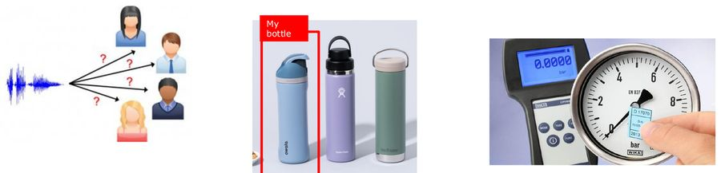
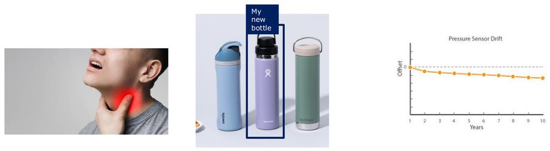
On-device learning: challenges
Learning on a budget, mostly unsupervised
Learning on the device is like studying for an exam with a tiny notebook, little time, nobody to tell you the right answers, and no teacher checking whether what you learned is correct.
- Limitations on time, memory, energy and computation: training needs far more of all of them than inference (for example, storing activations and gradients for backpropagation).
- Few data: only a small amount of memory to store them.
- Which data are relevant? The device has to choose what to keep.
- Few labels: nobody labels the data in the field.
- Little to no supervision on the learned model: a bad update may go unnoticed.
Task example: Tiny Speaker Verification (TinySV)
Personalisation with on-device learning
A voice-controlled device that should only obey its owner. Out of the box it can hear the keyword, but it cannot know whose voice is the owner's. During a short enrolment the owner says the keyword a few times; the device learns that voice itself, and from then on it tells "keyword, by the owner" from "keyword, by someone else".
- Recognise whether the person pronouncing a specific keyword k is the previously enrolled speaker SE or a non-enrolled speaker SNE.
- A personalisation task, solved with single-change adaptation: the enrolment phase collects the user's data on the device, the model is learned there, then inference runs.
| Input | TinySV output |
|---|---|
| Other words (no keyword) | 0: k not detected |
| Rose (not enrolled) says "Hi Sheila!" | 1: k detected, pronounced by an SNE |
| Bob (enrolled) says "Hi Sheila!" | 2: k pronounced by the SE Bob, detected |
Reference on the slide: Pavan, M., Mombelli, G., Sinacori, F., and Roveri, M. (2024). TinySV: Speaker Verification in TinyML with On-device Learning. 4th International Conference on AI-ML Systems. The demo slide shows the enrolment phase running on a development board.
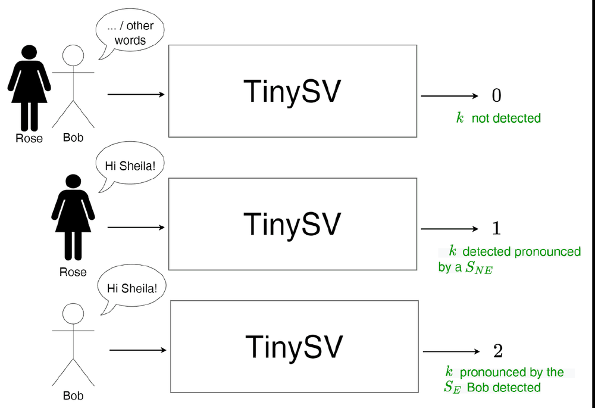
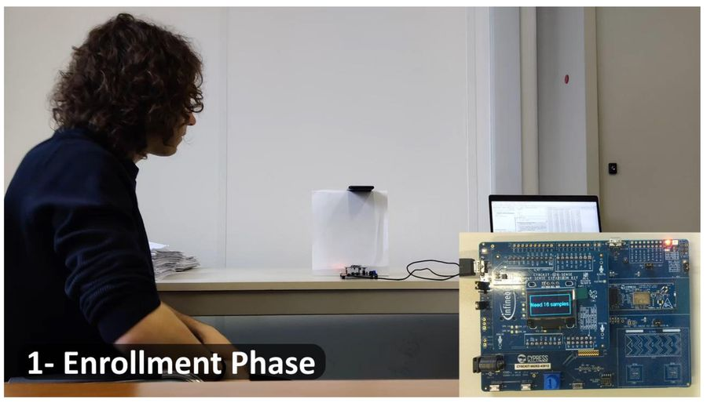
Cheat sheet
The lecture on one card
BLERP
Why process on the device instead of streaming raw data to the cloud.
Artificial neuron
Weighted sum plus bias, then a non-linear activation (sigmoid, step, ReLU). One neuron = one straight boundary.
Dense layer
Output x̄ × W + b. 7 → 5 gives 40 parameters.
Training
Random init, compute outputs, loss, backpropagation + gradient descent, repeat.
Evaluation
Always on test data not used for training.
Quantization
scale = (max - min) / (2b - 1). float32 → int8: ≈4x smaller, 2 to 4x faster.
Budgets
Application → device → algorithm requirements.
PTQ vs QAT
PTQ needs no labels or training; QAT is better at low bit-widths.
Workflow
Data engineering, model engineering, model deployment, product analytics.
On-device learning
Answers distribution shift (P → P¹). Challenges: resources, few data and labels, little supervision.
Figures cropped from the lecture slides "Week 8: Embedded AI" by Massimo Pavan, DTU Compute, with their original sources noted. For personal study.